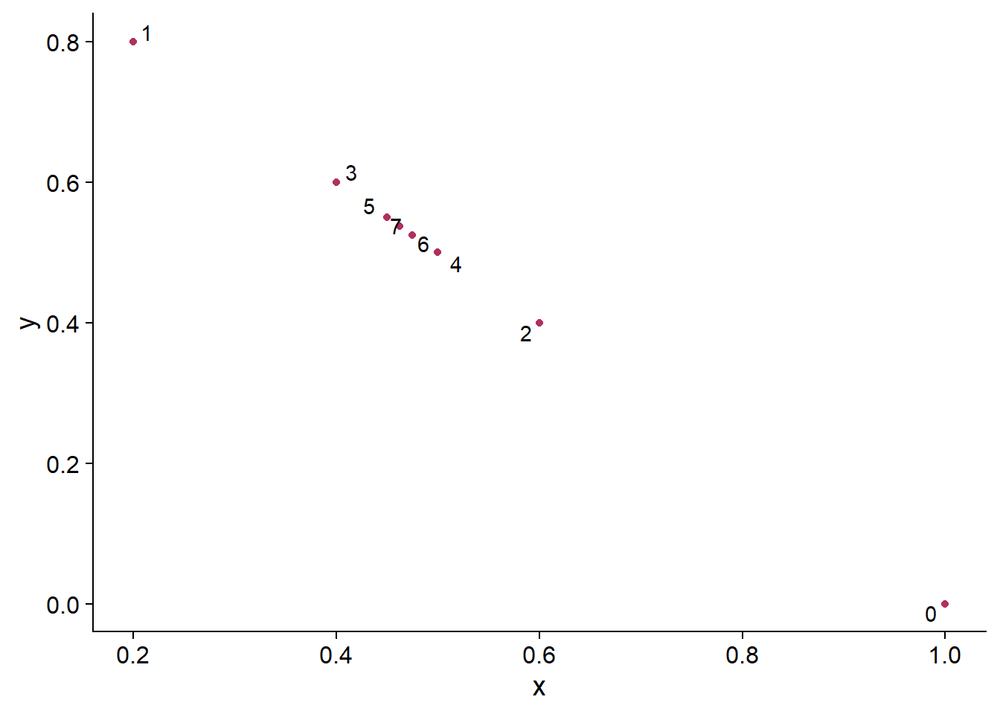

Last updated: 2020-10-17
Checks: 7 0
Knit directory: Homework/
This reproducible R Markdown analysis was created with workflowr (version 1.6.2). The Checks tab describes the reproducibility checks that were applied when the results were created. The Past versions tab lists the development history.
Great! Since the R Markdown file has been committed to the Git repository, you know the exact version of the code that produced these results.
Great job! The global environment was empty. Objects defined in the global environment can affect the analysis in your R Markdown file in unknown ways. For reproduciblity it’s best to always run the code in an empty environment.
The command set.seed(20201010) was run prior to running the code in the R Markdown file. Setting a seed ensures that any results that rely on randomness, e.g. subsampling or permutations, are reproducible.
Great job! Recording the operating system, R version, and package versions is critical for reproducibility.
Nice! There were no cached chunks for this analysis, so you can be confident that you successfully produced the results during this run.
Great job! Using relative paths to the files within your workflowr project makes it easier to run your code on other machines.
Great! You are using Git for version control. Tracking code development and connecting the code version to the results is critical for reproducibility.
The results in this page were generated with repository version 6a1cbe6. See the Past versions tab to see a history of the changes made to the R Markdown and HTML files.
Note that you need to be careful to ensure that all relevant files for the analysis have been committed to Git prior to generating the results (you can use wflow_publish or wflow_git_commit). workflowr only checks the R Markdown file, but you know if there are other scripts or data files that it depends on. Below is the status of the Git repository when the results were generated:
Ignored files:
Ignored: .Rhistory
Ignored: .Rproj.user/
Untracked files:
Untracked: Homework1.Rmd.log
Untracked: Homework1.Rmd.tex
Untracked: TinyTeX.zip
Untracked: analysis/Figs/
Untracked: analysis/Trash/
Note that any generated files, e.g. HTML, png, CSS, etc., are not included in this status report because it is ok for generated content to have uncommitted changes.
There are no past versions. Publish this analysis with wflow_publish() to start tracking its development.
Professor: Fatma Terzioglu
Student: Kiseok Lee
Markov Matrice problem: This is a computational exercise, meant to be completed using Matlab, Octave, R, or Julia, related to methods for solving linear systems by iterative techniques (that is, constructing a sequence of approximate vectors which " to the desired solution).
u0 = c(1,0)
A = matrix( c(.2,.8,.7,.3), nrow=2, ncol=2)
A [,1] [,2]
[1,] 0.2 0.7
[2,] 0.8 0.3u1 = A%*%u0
u2 = A%*%u1
u3 = A%*%u2
u4 = A%*%u3The common property of u1, u2, u3, u4 is that the entries are summed to 1.
library(ggplot2)
library(cowplot)
library(ggrepel)
library(plotly)
다음의 패키지를 부착합니다: 'plotly'The following object is masked from 'package:ggplot2':
last_plotThe following object is masked from 'package:stats':
filterThe following object is masked from 'package:graphics':
layoutlibrary(htmlwidgets)u5 = A%*%u4
u6 = A%*%u5
u7 = A%*%u6
df_u <- t(cbind(u0, u1, u2, u3, u4, u5, u6, u7))
colnames(df_u) <- c('x','y')
df_u <- data.frame(df_u)
rownames(df_u) <- c('u0', 'u1', 'u2', 'u3', 'u4', 'u5', 'u6', 'u7')
df_u$label <- c('0', '1', '2', '3', '4', '5', '6', '7')
df_u x y label
u0 1.0000 0.0000 0
u1 0.2000 0.8000 1
u2 0.6000 0.4000 2
u3 0.4000 0.6000 3
u4 0.5000 0.5000 4
u5 0.4500 0.5500 5
u6 0.4750 0.5250 6
u7 0.4625 0.5375 7p1 <- ggplot(df_u,aes_string(x = "x",y = "y")) + geom_point(color='maroon') + theme_cowplot() + geom_text_repel(aes(label=label))
p1
u=c(1,0)
for (i in 1:1000000){
u <- A %*% u
}
u_star <- u
u_star [,1]
[1,] 0.4666667
[2,] 0.5333333u_star - A %*% u_star [,1]
[1,] 0
[2,] 0Therefore, Au_star is approximately u_star, given that 1000000 is a big number. When tested with bigger numbers, the results stays the same. Thus, it could be said that the approximation is verifiable.
Let n >= 1 be given. For each vector v = (v1; : : : ; vn) consisting of an n-tuple of real numbers, let f(v) = max(vi : i = 1,…,n) be the largest entry in v.
# function for finding maximum value and its indices
max_finder <- function(v){
if(length(v)==0){ # if there is no element in the vector, show error message
print('please provide a vector with at least 1 element')
} else {
# get the maximum value by comparing 2 elements at once (sequentially)
max=v[1]
for (i in 1:length(v)){
if (max < v[i]){
max = v[i]
}
}
# add a function to get the indices with max value
index_list=c()
for (i in 1:length(v)){
if (v[i]== max){
index_list <- c(index_list, i)
}
}
print('The indices with the maximum value are ')
print(index_list)
print('The maximum value is')
return(max)
}
}# test 1: getting the proper error message
v=c()
max_finder(v)[1] "please provide a vector with at least 1 element"# test 2: getting the proper maximum value
v1 = c(1, 3, 4, 9, 5, 6)
max_finder(v1)[1] "The indices with the maximum value are "
[1] 4
[1] "The maximum value is"[1] 9# test 3: getting the proper indices for ties in maximum
v2 = c(1, 3, 4, 9, 5, 6, 9, 9)
max_finder(v2) [1] "The indices with the maximum value are "
[1] 4 7 8
[1] "The maximum value is"[1] 9The next coding is just done for additional applications when working with multiple vectors(not asked from homework)
# (Appendix) when working with a matrix of vectors
v1 = c(1, 3, 4, 9, 5, 6)
v2 = c(5, 10, 12, 11, 16, 8)
v3 = c(2, 2, 2, 2, 2, 19)
v_mat <- rbind(v1, v2, v3)
dim(v_mat)[1] 3 6max=v_mat[1,1]
for (i in 1:dim(v_mat)[1]){
for (j in 1:dim(v_mat)[2]){
if ((max < v_mat[i,j]) == TRUE){
max = v_mat[i,j]
print(max)
}
}
}v1
3
v1
4
v1
9
v2
10
v2
12
v2
16
v3
19 maxv3
19
sessionInfo()R version 4.0.2 (2020-06-22)
Platform: x86_64-w64-mingw32/x64 (64-bit)
Running under: Windows 10 x64 (build 18363)
Matrix products: default
locale:
[1] LC_COLLATE=Korean_Korea.949 LC_CTYPE=Korean_Korea.949
[3] LC_MONETARY=Korean_Korea.949 LC_NUMERIC=C
[5] LC_TIME=Korean_Korea.949
attached base packages:
[1] stats graphics grDevices utils datasets methods base
other attached packages:
[1] htmlwidgets_1.5.1 plotly_4.9.2.1 ggrepel_0.8.2 cowplot_1.1.0
[5] ggplot2_3.3.2 workflowr_1.6.2
loaded via a namespace (and not attached):
[1] Rcpp_1.0.5 pillar_1.4.6 compiler_4.0.2 later_1.1.0.1
[5] git2r_0.27.1 tools_4.0.2 digest_0.6.25 viridisLite_0.3.0
[9] jsonlite_1.7.0 evaluate_0.14 lifecycle_0.2.0 tibble_3.0.3
[13] gtable_0.3.0 pkgconfig_2.0.3 rlang_0.4.7 rstudioapi_0.11
[17] yaml_2.2.1 xfun_0.16 httr_1.4.2 withr_2.3.0
[21] stringr_1.4.0 dplyr_1.0.1 knitr_1.30 generics_0.0.2
[25] fs_1.5.0 vctrs_0.3.2 rprojroot_1.3-2 grid_4.0.2
[29] tidyselect_1.1.0 data.table_1.13.0 glue_1.4.2 R6_2.4.1
[33] rmarkdown_2.3 whisker_0.4 farver_2.0.3 tidyr_1.1.1
[37] purrr_0.3.4 magrittr_1.5 backports_1.1.7 scales_1.1.1
[41] promises_1.1.1 ellipsis_0.3.1 htmltools_0.5.0 colorspace_1.4-1
[45] httpuv_1.5.4 labeling_0.3 stringi_1.5.3 lazyeval_0.2.2
[49] munsell_0.5.0 crayon_1.3.4